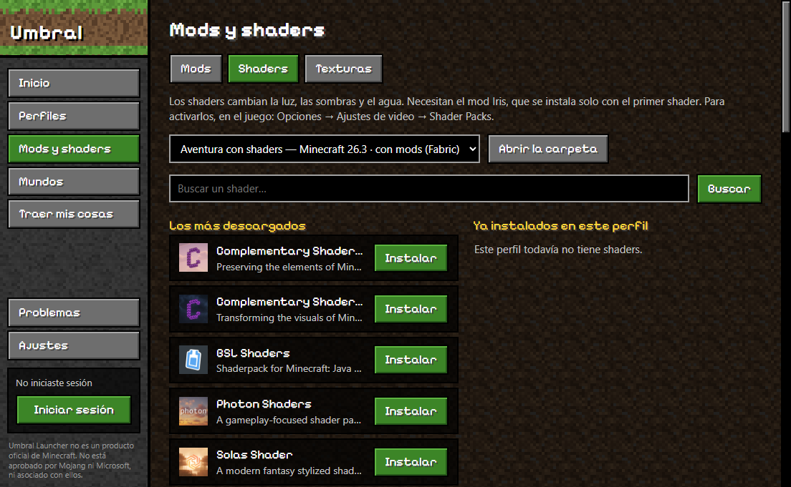

Separate profiles
Perfiles separados
Each one has its own version, mods and worlds. Your modded game never breaks your vanilla one.
Cada uno con su versión, mods y mundos. Tu juego con mods nunca rompe el normal.
Cross the threshold. Sign in, pick a version, add mods and shaders, and play — without fighting Java, folders or broken installs.
Cruzá el umbral. Iniciá sesión, elegí la versión, sumá mods y shaders, y jugá — sin pelearte con Java, carpetas ni instalaciones rotas.
Umbral Launcher is an independent, non-commercial project. You need to own Minecraft: Java Edition. Game files are downloaded from Mojang's official servers; nothing is redistributed.
Umbral Launcher es un proyecto independiente y sin fines comerciales. Necesitás tener comprado Minecraft: Java Edition. Los archivos del juego se descargan de los servidores oficiales de Mojang; no se redistribuye nada.
Made for people who just want to play: plain words, one button for each thing, and your worlds protected.
Hecho para quien solo quiere jugar: palabras claras, un botón para cada cosa y tus mundos protegidos.
Each one has its own version, mods and worlds. Your modded game never breaks your vanilla one.
Cada uno con su versión, mods y mundos. Tu juego con mods nunca rompe el normal.
The game, the right Java and Fabric or NeoForge are downloaded for you, from official sources.
El juego, el Java correcto y Fabric o NeoForge se descargan solos, de fuentes oficiales.
Search Modrinth and install with one click. Dependencies come along, and Iris is added with your first shader.
Buscás en Modrinth e instalás con un clic. Las dependencias vienen solas, e Iris se suma con tu primer shader.
Every world you play is saved when the game closes. Restoring never overwrites what you have.
Cada mundo que jugás se copia al cerrar el juego. Restaurar nunca pisa lo que tenés.
Copies worlds, mods and settings from the official launcher or Prism. The originals stay untouched.
Copia mundos, mods y opciones del launcher oficial o de Prism. Los originales quedan intactos.
If the game closes, known causes are explained in plain words — and a missing mod can be installed in one click.
Si el juego se cierra, las causas conocidas se explican en palabras simples, y un mod que falta se instala con un clic.
The interface is in Spanish, built with the project's own textures and an open-licensed pixel font.
La interfaz usa texturas propias del proyecto y una tipografía pixelada de licencia abierta.




Sign-in happens on Microsoft's own page, in your browser, with the standard OAuth flow. The launcher only receives permission to start the game, stored encrypted for your Windows user.
El inicio de sesión ocurre en la página de Microsoft, en tu navegador, con el método estándar OAuth. El launcher solo recibe un permiso para abrir el juego, guardado cifrado para tu usuario de Windows.
Download UmbralLauncher-Setup.exe and open it.
Descargá UmbralLauncher-Setup.exe y abrilo.
If you see "Windows protected your PC", click More info → Run anyway. The installer isn't code-signed.
Si ves "Windows protegió su PC", tocá Más información → Ejecutar de todas formas. El instalador no tiene firma digital.
Sign in with the Microsoft account that owns Minecraft: Java Edition.
Iniciá sesión con la cuenta de Microsoft que tiene Minecraft: Java Edition.
Create a profile and play. The first launch downloads the game.
Creá un perfil y jugá. La primera vez descarga el juego.
To update, install the new version over the old one: profiles, worlds and mods are kept. The launcher tells you when there is one.
Para actualizar, instalá la versión nueva encima: se conservan perfiles, mundos y mods. El launcher te avisa cuando hay una.